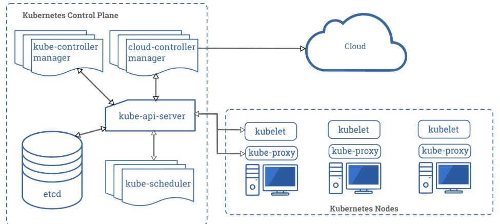

Kubernetes Security Cheat Sheet¶
Kubernetes¶
Kubernetes is an open source container orchestration engine for automating deployment, scaling, and management of containerized applications. The open source project is hosted by the Cloud Native Computing Foundation (CNCF).
When you deploy Kubernetes, you get a cluster. A Kubernetes cluster consists of a set of worker machines, called nodes that run containerized applications. The control plane manages the worker nodes and the Pods in the cluster.
Control Plane Components¶
The control plane's components make global decisions about the cluster, as well as detecting and responding to cluster events. It consists of components such as kube-apiserver, etcd, kube-scheduler, kube-controller-manager and cloud-controller-manager
| Component | Description |
|---|---|
| kube-apiserver | kube-apiserver exposes the Kubernetes API. The API server is the front end for the Kubernetes control plane. |
| etcd | etcd is a consistent and highly-available key-value store used as Kubernetes' backing store for all cluster data. |
| kube-scheduler | kube-scheduler watches for newly created Pods with no assigned node, and selects a node for them to run on. |
| kube-controller-manager | kube-controller-manager runs controller processes. Logically, each controller is a separate process, but to reduce complexity, they are all compiled into a single binary and run in a single process. |
| cloud-controller-manager | The cloud controller manager lets you link your cluster into your cloud provider's API, and separates out the components that interact with that cloud platform from components that just interact with your cluster. |
Node Components¶
Node components run on every node, maintaining running pods and providing the Kubernetes runtime environment. It consists of components such as kubelet, kube-proxy and container runtime.
| Component | Description |
|---|---|
| kubelet | kubelet is an agent that runs on each node in the cluster. It makes sure that containers are running in a Pod |
| kube-proxy | kube-proxy is a network proxy that runs on each node in your cluster, implementing part of the Kubernetes Service concept |
| Container runtime | The container runtime is the software that is responsible for running containers. |

This cheatsheet provides a starting point for securing Kubernetes cluster. It is divided into the following categories:
- Securing Kubernetes hosts
- Securing Kubernetes components
- Kubernetes Security Best Practices: Build Phase
- Kubernetes Security Best Practices: Deploy Phase
- Kubernetes Security Best Practices: Runtime Phase
Securing Kubernetes hosts¶
There are several options available to deploy Kubernetes: on bare metal, on-premise, and in the public cloud (custom Kubernetes build on virtual machines OR use a managed service). Kubernetes was designed to be highly portable and customers can easily switch between these installations, migrating their workloads.
All of this potential customisation of Kubernetes means it can be designed to fit a large variety of scenarios; however, this is also its greatest weakness when it comes to security. Kubernetes is designed out of the box to be customizable and users must turn on certain functionality to secure their cluster. This means that the engineers responsible for deploying the Kubernetes platform need to know about all the potential attack vectors and vulnerabilities poor configuration can lead to.
It is recommended to harden the underlying hosts by installing the latest version of operating system, hardening the operating system, implement necessary patch management and configuration management system, implementing essential firewall rules and undertake specific security measures depending on the datacenter environment.
Kubernetes Version¶
It has become impossible to track all potential attack vectors. This fact is unfortunate as there is nothing more vital than to be aware and on top of potential threats. The best defense is to make sure that you are running the latest available version of Kubernetes.
The Kubernetes project maintains release branches for the most recent three minor releases and it backports the applicable fixes, including security fixes, to those three release branches, depending on severity and feasibility. Patch releases are cut from those branches at a regular cadence, plus additional urgent releases, when required. Hence it is always recommended to upgrade the Kubernetes cluster to the latest available stable version. It is recommended to refer to the version skew policy for further details https://kubernetes.io/docs/setup/release/version-skew-policy/.
There are several techniques such as rolling updates, and node pool migrations that allow you to complete an update with minimal disruption and downtime.
Securing Kubernetes components¶
Control network access to sensitive ports¶
Kubernetes clusters usually listen on a range of well-defined and distinctive ports which makes it easier identify the clusters and attack them. Hence it is highly recommended to configure authentication and authorization on the cluster and cluster nodes.
Here is an overview of the default ports used in Kubernetes. Make sure that your network blocks access to ports and consider limiting access to the Kubernetes API server except from trusted networks.
Master node(s):
| Protocol | Port Range | Purpose |
|---|---|---|
| TCP | 6443- | Kubernetes API Server |
| TCP | 2379-2380 | etcd server client API |
| TCP | 10250 | Kubelet API |
| TCP | 10251 | kube-scheduler |
| TCP | 10252 | kube-controller-manager |
| TCP | 10255 | Read-Only Kubelet API |
Worker nodes:
| Protocol | Port Range | Purpose |
|---|---|---|
| TCP | 10250 | Kubelet API |
| TCP | 10255 | Read-Only Kubelet API |
| TCP | 30000-32767 | NodePort Services |
Limit Direct Access to Kubernetes Nodes¶
You should limit SSH access to Kubernetes nodes, reducing the risk for unauthorized access to host resource. Instead you should ask users to use "kubectl exec", which will provide direct access to the container environment without the ability to access the host.
You can use Kubernetes Authorization Plugins to further control user access to resources. This allows defining fine-grained-access control rules for specific namespace, containers and operations.
Controlling access to the Kubernetes API¶
The Kubernetes platform is controlled using API requests and as such is the first line of defense against attackers. Controlling who has access and what actions they are allowed to perform is the primary concern. For more information, refer to the documentation at https://kubernetes.io/docs/reference/access-authn-authz/controlling-access/.
Use Transport Layer Security¶
Communication in the cluster between services should be handled using TLS, encrypting all traffic by default. This, however, is often overlooked with the thought being that the cluster is secure and there is no need to provide encryption in transit within the cluster.
Advances in network technology, such as the service mesh, have led to the creation of products like LinkerD and Istio which can enable TLS by default while providing extra telemetry information on transactions between services.
Kubernetes expects that all API communication in the cluster is encrypted by default with TLS, and the majority of installation methods will allow the necessary certificates to be created and distributed to the cluster components. Note that some components and installation methods may enable local ports over HTTP and administrators should familiarize themselves with the settings of each component to identify potentially unsecured traffic.
To learn more on usage of TLS in Kubernetes cluster, refer to the documentation at https://kubernetes.io/blog/2018/07/18/11-ways-not-to-get-hacked/#1-tls-everywhere.
API Authentication¶
Choose an authentication mechanism for the API servers to use that matches the common access patterns when you install a cluster. For instance, small single user clusters may wish to use a simple certificate or static Bearer token approach. Larger clusters may wish to integrate an existing OIDC or LDAP server that allow users to be subdivided into groups.
All API clients must be authenticated, even those that are part of the infrastructure like nodes, proxies, the scheduler, and volume plugins. These clients are typically service accounts or use x509 client certificates, and they are created automatically at cluster startup or are setup as part of the cluster installation.
For more information, consult Kubernetes authentication reference document at https://kubernetes.io/docs/reference/access-authn-authz/authentication
API Authorization - Implement role-based access control¶
In Kubernetes, you must be authenticated (logged in) before your request can be authorized (granted permission to access). Kubernetes expects attributes that are common to REST API requests. This means that Kubernetes authorization works with existing organization-wide or cloud-provider-wide access control systems which may handle other APIs besides the Kubernetes API.
Kubernetes authorizes API requests using the API server. It evaluates all of the request attributes against all policies and allows or denies the request. All parts of an API request must be allowed by some policy in order to proceed. This means that permissions are denied by default.
Role-based access control (RBAC) is a method of regulating access to computer or network resources based on the roles of individual users within your organization.
Kubernetes ships an integrated Role-Based Access Control (RBAC) component that matches an incoming user or group to a set of permissions bundled into roles. These permissions combine verbs (get, create, delete) with resources (pods, services, nodes) and can be namespace or cluster scoped. A set of out of the box roles are provided that offer reasonable default separation of responsibility depending on what actions a client might want to perform. It is recommended that you use the Node and RBAC authorizers together, in combination with the NodeRestriction admission plugin.
RBAC authorization uses the rbac.authorization.k8s.io API group to drive authorization decisions, allowing you to dynamically configure policies through the Kubernetes API. To enable RBAC, start the API server with the --authorization-mode flag set to a comma-separated list that includes RBAC; for example:
# kube-apiserver --authorization-mode=Example,RBAC --other-options --more-options
For detailed examples of utilizing RBAC, refer to Kubernetes documentation at https://kubernetes.io/docs/reference/access-authn-authz/rbac
Restrict access to etcd¶
etcd is a critical Kubernetes component which stores information on state and secrets, and it should be protected differently from the rest of your cluster. Write access to the API server's etcd is equivalent to gaining root on the entire cluster, and even read access can be used to escalate privileges fairly easily.
The Kubernetes scheduler will search etcd for pod definitions that do not have a node. It then sends the pods it finds to an available kubelet for scheduling. Validation for submitted pods is performed by the API server before it writes them to etcd, so malicious users writing directly to etcd can bypass many security mechanisms - e.g. PodSecurityPolicies.
Administrators should always use strong credentials from the API servers to their etcd server, such as mutual auth via TLS client certificates, and it is often recommended to isolate the etcd servers behind a firewall that only the API servers may access.
Caution¶
Allowing other components within the cluster to access the master etcd instance with read or write access to the full keyspace is equivalent to granting cluster-admin access. Using separate etcd instances for non-master components or using etcd ACLs to restrict read and write access to a subset of the keyspace is strongly recommended.
Controlling access to the Kubelet¶
Kubelets expose HTTPS endpoints which grant powerful control over the node and containers. By default Kubelets allow unauthenticated access to this API. Production clusters should enable Kubelet authentication and authorization.
For more information, refer to Kubelet authentication/authorization documentation at https://kubernetes.io/docs/reference/command-line-tools-reference/kubelet-authentication-authorization
Securing Kubernetes Dashboard¶
The Kubernetes dashboard is a webapp for monitoring your cluster. It it is not a part of the Kubernetes cluster itself, it has to be installed by the owners of the cluster. Thus, there are a lot of tutorials on how to do this. Unfortunately, most of them create a service account with very high privileges. This caused Tesla and some others to be hacked via such a poorly configured K8s dashboard. (Reference: Tesla cloud resources are hacked to run cryptocurrency-mining malware - https://arstechnica.com/information-technology/2018/02/tesla-cloud-resources-are-hacked-to-run-cryptocurrency-mining-malware/)
To prevent attacks via the dashboard, you should follow some tips:
- Do not expose the dashboard to the public. There is no need to access such a powerful tool from outside your LAN
- Turn on RBAC, so you can limit the service account the dashboard uses
- Do not grant the service account of the dashboard high privileges
- Grant permissions per user, so each user only can see what he is supposed to see
- If you are using network policies, you can block requests to the dashboard even from internal pods (this will not affect the proxy tunnel via kubectl proxy)
- Before version 1.8, the dashboard had a service account with full privileges, so check that there is no role binding for cluster-admin left.
Kubernetes Security Best Practices: Build Phase¶
Securing containers and Kubernetes starts in the build phase with securing your container images. The two main things to do here are to build secure images and to scan those images for any known vulnerabilities.
A Container image is an immutable, lightweight, standalone, executable package of software that includes everything needed to run an application: code, runtime, system tools, system libraries and settings [https://www.docker.com/resources/what-container]. The image shares the kernel of the operating system present in its host machine.
Container images must be built using approved and secure base image that is scanned and monitored at regular intervals to ensure only secure and authentic images can be used within the cluster. It is recommended to configure strong governance policies regarding how images are built and stored in trusted image registries.
Ensure That Only Authorized Images are used in Your Environment¶
Without a process that ensures that only images adhering to the organization’s policy are allowed to run, the organization is open to risk of running vulnerable or even malicious containers. Downloading and running images from unknown sources is dangerous. It is equivalent to running software from an unknown vendor on a production server. Don’t do that.
Container registry and the use of an image scanner to identify known vulnerabilities¶
Container registry is the central repository of container images. Based on the needs, we can utilize public repositories or have a private repository as the container registry. Use private registries to store your approved images - make sure you only push approved images to these registries. This alone reduces the number of potential images that enter your pipeline to a fraction of the hundreds of thousands of publicly available images.
Build a CI pipeline that integrates security assessment (like vulnerability scanning), making it part of the build process. The CI pipeline should ensure that only vetted code (approved for production) is used for building the images. Once an image is built, it should be scanned for security vulnerabilities, and only if no issues are found then the image would be pushed to a private registry, from which deployment to production is done. A failure in the security assessment should create a failure in the pipeline, preventing images with bad security quality from being pushed to the image registry.
There is work in progress being done in Kubernetes for image authorization plugins, which will allow preventing the shipping of unauthorized images. For more information, refer to the PR https://github.com/kubernetes/kubernetes/pull/27129.
Use minimal base images and avoid adding unnecessary components¶
Avoid using images with OS package managers or shells because they could contain unknown vulnerabilities. If you must include OS packages, remove the package manager at a later step. Consider using minimal images such as distroless images, as an example.
Distroless images¶
Restricting what's in your runtime container to precisely what's necessary for your app is a best practice employed by Google and other tech giants that have used containers in production for many years. It improves the signal to noise of scanners (e.g. CVE) and reduces the burden of establishing provenance to just what you need.
For more information on ditroless images, refer to https://github.com/GoogleContainerTools/distroless.
Use the latest images/ensure images are up to date¶
Ensure your images (and any third-party tools you include) are up to date and utilizing the latest versions of their components.
Kubernetes Security Best Practices: Deploy Phase¶
Kubernetes infrastructure should be configured securely prior to workloads being deployed. From a security perspective, you first need visibility into what you’re deploying – and how. Then you can identify and respond to security policy violations. At a minimum, you need to know:
- What is being deployed - including information about the image being used, such as components or vulnerabilities, and the pods that will be deployed
- Where it is going to be deployed - which clusters, namespaces, and nodes
- How it is deployed - whether it runs privileged, what other deployments it can communicate with, the pod security context that is applied, if any
- What it can access - including secrets, volumes, and other infrastructure components such as the host or orchestrator API
- Is it compliant - whether it complies with your policies and security requirements
Use Kubernetes namespaces to properly isolate your Kubernetes resources¶
Namespaces give you the ability to create logical partitions and enforce separation of your resources as well as limit the scope of user permissions.
Setting the namespace for a request¶
To set the namespace for a current request, use the --namespace flag. Refer to the following examples:
kubectl run nginx --image=nginx --namespace=<insert-namespace-name-here>
kubectl get pods --namespace=<insert-namespace-name-here>
Setting the namespace preference¶
You can permanently save the namespace for all subsequent kubectl commands in that context.
kubectl config set-context --current --namespace=<insert-namespace-name-here>
Validate it with the following command.
kubectl config view --minify | grep namespace:
Learn more about namespaces at https://kubernetes.io/docs/concepts/overview/working-with-objects/namespaces
Create policies to govern image provenance using the ImagePolicyWebhook¶
Prevent unapproved images from being used with the admission controller ImagePolicyWebhook to reject pods that use unapproved images including:
- Images that haven’t been scanned recently
- Images that use a base image that’s not whitelisted
- Images from insecure registries Learn more about webhook at https://kubernetes.io/docs/reference/access-authn-authz/admission-controllers/#imagepolicywebhook
Implement Continuous Security Vulnerability Scanning¶
New vulnerabilities are published every day and containers might include outdated packages with known vulnerabilities (CVEs). Hence it is recommended to implement an ongoing process, where images are continuously assessed, is crucial to insure a required security posture.
Regularly Apply Security Updates to Your Environment¶
In case vulnerabilities are found in running containers, it is recommended to always update the source image and redeploy the containers.
NOTE¶
Try to avoid direct updates to the running containers as this can break the image-container relationship.
Example: apt-update
Upgrading containers is extremely easy with the Kubernetes rolling updates feature - this allows gradually updating a running application by upgrading its images to the latest version.
Assess the privileges used by containers¶
The set of capabilities, role bindings, and privileges given to containers can greatly impact your security risk. The goal here is to adhere to the principle of least privilege and provide the minimum privileges and capabilities that would allow the container to perform its intended function.
Pod Security Policies are one way to control the security-related attributes of pods, including container privilege levels. These can allow an operator to specify the following:
- Do not run application processes as root.
- Do not allow privilege escalation.
- Use a read-only root filesystem.
- Use the default (masked) /proc filesystem mount
- Do not use the host network or process space - using "hostNetwork:true" will cause NetworkPolicies to be ignored since the Pod will use its host network.
- Drop unused and unnecessary Linux capabilities.
- Use SELinux options for more fine-grained process controls.
- Give each application its own Kubernetes Service Account.
- Do not mount the service account credentials in a container if it does not need to access the Kubernetes API.
For more information on Pod security policies, refer to the documentation at https://kubernetes.io/docs/concepts/policy/pod-security-policy/.
Apply Security Context to Your Pods and Containers¶
A security context is a property defined in the deployment yaml. It controls the security parameters that will be assigned to the pod/container/volume. These controls can eliminate entire classes of attacks that depend on privileged access. Read-only root file systems, for example, can prevent any attack that depends on installing software or writing to the file system.
When designing your containers and pods, make sure that you configure the security context for your pods, containers and volumes to grant only the privileges needed for the resource to function. Some of the important parameters are as follows:
| Security Context Setting | Description |
|---|---|
| SecurityContext->runAsNonRoot | Indicates that containers should run as non-root user |
| SecurityContext->Capabilities | Controls the Linux capabilities assigned to the container. |
| SecurityContext->readOnlyRootFilesystem | Controls whether a container will be able to write into the root filesystem. |
| PodSecurityContext->runAsNonRoot | Prevents running a container with 'root' user as part of the pod |
Here is an example for pod definition with security context parameters:
apiVersion: v1
kind: Pod
metadata:
name: hello-world
spec:
containers:
# specification of the pod’s containers
# ...
# ...
# Security Context
securityContext:
readOnlyRootFilesystem: true
runAsNonRoot: true
For more information on security context for Pods, refer to the documentation at https://kubernetes.io/docs/tasks/configure-pod-container/security-context
Implement Service Mesh¶
A service mesh is an infrastructure layer for microservices applications that can help reduce the complexity of managing microservices and deployments by handling infrastructure service communication quickly, securely and reliably. Service meshes are great at solving operational challenges and issues when running containers and microservices because they provide a uniform way to secure, connect and monitor microservices. Service mesh provides the following advantages:
Obeservability¶
Service Mesh provides tracing and telemetry metrics that make it easy to understand your system and quickly root cause any problems.
Security¶
A service mesh provides security features aimed at securing the services inside your network and quickly identifying any compromising traffic entering your cluster. A service mesh can help you more easily manage security through mTLS, ingress and egress control, and more.
-
mTLS and Why it Matters Securing microservices is hard. There are a multitude of tools that address microservices security, but service mesh is the most elegant solution for addressing encryption of on-the-wire traffic within the network. Service mesh provides defense with mutual TLS (mTLS) encryption of the traffic between your services. The mesh can automatically encrypt and decrypt requests and responses, removing that burden from the application developer. It can also improve performance by prioritizing the reuse of existing, persistent connections, reducing the need for the computationally expensive creation of new ones. With service mesh, you can secure traffic over the wire and also make strong identity-based authentication and authorizations for each microservice. We see a lot of value in this for enterprise companies. With a good service mesh, you can see whether mTLS is enabled and working between each of your services and get immediate alerts if security status changes.
-
Ingress & Egress Control Service mesh adds a layer of security that allows you to monitor and address compromising traffic as it enters the mesh. Istio integrates with Kubernetes as an ingress controller and takes care of load balancing for ingress. This allows you to add a level of security at the perimeter with ingress rules. Egress control allows you to see and manage external services and control how your services interact with them.
Operational Control¶
A service mesh allows security and platform teams to set the right macro controls to enforce access controls, while allowing developers to make customizations they need to move quickly within these guardrails.
RBAC¶
A strong Role Based Access Control (RBAC) system is arguably one of the most critical requirements in large engineering organizations, since even the most secure system can be easily circumvented by overprivileged users or employees. Restricting privileged users to least privileges necessary to perform job responsibilities, ensuring access to systems are set to “deny all” by default, and ensuring proper documentation detailing roles and responsibilities are in place is one of the most critical security concerns in the enterprise.
Disadvantages¶
Along with the many advantages, Service mesh also brings in its set of challenges, few of them are listed below:
- Added Complexity: The introduction of proxies, sidecars and other components into an already sophisticated environment dramatically increases the complexity of development and operations.
- Required Expertise: Adding a service mesh such as Istio on top of an orchestrator such as Kubernetes often requires operators to become experts in both technologies.
- Slowness: Service meshes are an invasive and intricate technology that can add significant slowness to an architecture.
- Adoption of a Platform: The invasiveness of service meshes force both developers and operators to adapt to a highly opinionated platform and conform to its rules.
Implementing Open Policy Agent (OPA) for a centralized policy management¶
OPA is a project that started in 2016 aimed at unifying policy enforcement across different technologies and systems. It can be used to enforce policies on their platforms (like Kubernetes clusters). When it comes to Kubernetes, RBAC and Pod security policies to impose fine-grained control over the cluster. But again, this will only apply to the cluster but not outside the cluster. That’s where Open Policy Agent (OPA) comes into play. OPA was introduced to create a unified method of enforcing security policy in the stack.
OPA is a general-purpose, domain-agnostic policy enforcement tool. It can be integrated with APIs, the Linux SSH daemon, an object store like CEPH, etc. OPA designers purposefully avoided basing it on any other project. Accordingly, the policy query and decision do not follow a specific format. That is, you can use any valid JSON data as request attributes as long as it provides the required data. Similarly, the policy decision coming from OPA can also be any valid JSON data. You choose what gets input and what gets output. For example, you can opt to have OPA return a True or False JSON object, a number, a string, or even a complex data object. Currently, OPA is part of CNCF as an incubating project.
Most common use cases of OPA:
- Application authorization
OPA enables you to accelerate time to market by providing pre-cooked authorization technology so you don’t have to develop it from scratch. It uses a declarative policy language purpose built for writing and enforcing rules such as, “Alice can write to this repository,” or “Bob can update this account.” It comes with a rich suite of tooling to help developers integrate those policies into their applications and even allow the application’s end users to contribute policy for their tenants as well.
If you have homegrown application authorization solutions in place, you may not want to rip them out to swap in OPA. At least not yet. But if you are going to be decomposing those monolithic apps and moving to microservices to scale and improve developer efficiency, you’re going to need a distributed authorization system and OPA is the answer.
- Kubernetes admission control
Kubernetes has given developers tremendous control over the traditional silos of compute, networking and storage. Developers today can set up the network the way they want and set up storage the way they want. Administrators and security teams responsible for the well-being of a given container cluster need to make sure developers don’t shoot themselves (or their neighbors) in the foot.
OPA can be used to build policies that require, for example, all container images to be from trusted sources, that prevent developers from running software as root, that make sure storage is always marked with the encrypt bit, that storage does not get deleted just because a pod gets restarted, that limits internet access, etc.
OPA integrates directly into the Kubernetes API server, so it has complete authority to reject any resource—whether compute, networking, storage, etc.—that policy says doesn’t belong in a cluster. Moreover, you can expose those policies earlier in the development lifecycle (e.g. the CICD pipeline or even on developer laptops) so that developers can receive feedback as early as possible. You can even run policies out-of-band to monitor results so that administrators can ensure policy changes don’t inadvertently do more damage than good.
- Service mesh authorization
And finally, many organizations are using OPA to regulate use of service mesh architectures. So, even if you’re not embedding OPA to implement application authorization logic (the top use case discussed above), you probably still want control over the APIs microservices. You can execute and achieve that by putting authorization policies into the service mesh. Or, you may be motivated by security, and implement policies in the service mesh to limit lateral movement within a microservice architecture. Another common practice is to build policies into the service mesh to ensure your compliance regulations are satisfied even when modification to source code is involved.
Limiting resource usage on a cluster¶
Resource quota limits the number or capacity of resources granted to a namespace. This is most often used to limit the amount of CPU, memory, or persistent disk a namespace can allocate, but can also control how many pods, services, or volumes exist in each namespace.
Limit ranges restrict the maximum or minimum size of some of the resources above, to prevent users from requesting unreasonably high or low values for commonly reserved resources like memory, or to provide default limits when none are specified
An option of running resource-unbound containers puts your system in risk of DoS or “noisy neighbor” scenarios. To prevent and minimize those risks you should define resource quotas. By default, all resources in Kubernetes cluster are created with unbounded CPU and memory requests/limits. You can create resource quota policies, attached to Kubernetes namespace, in order to limit the CPU and memory a pod is allowed to consume.
The following is an example for namespace resource quota definition that will limit number of pods in the namespace to 4, limiting their CPU requests between 1 and 2 and memory requests between 1GB to 2GB.
compute-resources.yaml:
apiVersion: v1
kind: ResourceQuota
metadata:
name: compute-resources
spec:
hard:
pods: "4"
requests.cpu: "1"
requests.memory: 1Gi
limits.cpu: "2"
limits.memory: 2Gi
Assign a resource quota to namespace:
# kubectl create -f ./compute-resources.yaml --namespace=myspace
Use Kubernetes network policies to control traffic between pods and clusters¶
Running different applications on the same Kubernetes cluster creates a risk of one compromised application attacking a neighboring application. Network segmentation is important to ensure that containers can communicate only with those they are supposed to.
By default, Kubernetes allows every pod to contact every other pod. Traffic to a pod from an external network endpoint outside the cluster is allowed if ingress from that endpoint is allowed to the pod. Traffic from a pod to an external network endpoint outside the cluster is allowed if egress is allowed from the pod to that endpoint.
Network segmentation policies are a key security control that can prevent lateral movement across containers in the case that an attacker breaks in. One of the challenges in Kubernetes deployments is creating network segmentation between pods, services and containers. This is a challenge due to the “dynamic” nature of container network identities (IPs), along with the fact that containers can communicate both inside the same node or between nodes.
Users of Google Cloud Platform can benefit from automatic firewall rules, preventing cross-cluster communication. A similar implementation can be deployed on-premises using network firewalls or SDN solutions. There is work being done in this area by the Kubernetes Network SIG, which will greatly improve the pod-to-pod communication policies. A new network policy API should address the need to create firewall rules around pods, limiting the network access that a containerized can have.
The following is an example of a network policy that controls the network for “backend” pods, only allowing inbound network access from “frontend” pods:
POST /apis/net.alpha.kubernetes.io/v1alpha1/namespaces/tenant-a/networkpolicys
{
"kind": "NetworkPolicy",
"metadata": {
"name": "pol1"
},
"spec": {
"allowIncoming": {
"from": [{
"pods": { "segment": "frontend" }
}],
"toPorts": [{
"port": 80,
"protocol": "TCP"
}]
},
"podSelector": {
"segment": "backend"
}
}
}
For more information on configuring network policies, refer to the Kubernetes documentation at https://kubernetes.io/docs/concepts/services-networking/network-policies.
Securing data¶
Keeps secrets as secrets¶
In Kubernetes, a Secret is a small object that contains sensitive data, like a password or token. It is necessary to access how sensitive data such as credentials and keys are stored and accessed. Even though a pod is not able to access the secrets of another pod, it is crucial to keep the secret separate from an image or pod. Otherwise, anyone with access to the image would have access to the secret as well. Complex applications that handle multiple processes and have public access are especially vulnerable in this regard. You must ensure that secrets are not being passed as environment variables but are instead mounted into read-only volumes in your containers, for example.
Encrypt secrets at rest¶
The etcd database in general contains any information accessible via the Kubernetes API and may grant an attacker significant visibility into the state of your cluster.
Always encrypt your backups using a well reviewed backup and encryption solution, and consider using full disk encryption where possible.
Kubernetes supports encryption at rest, a feature introduced in 1.7, and beta since 1.13. This will encrypt Secret resources in etcd, preventing parties that gain access to your etcd backups from viewing the content of those secrets. While this feature is currently beta, it offers an additional level of defense when backups are not encrypted or an attacker gains read access to etcd.
Kubernetes Security Best Practices: Runtime Phase¶
The runtime phase exposes containerized applications to a slew of new security challenges. Your goal here is to both gain visibility into your running environment and detect and respond to threats as they arise.
Proactively securing your containers and Kubernetes deployments at the build and deploy phases can greatly reduce the likelihood of security incidents at runtime and the subsequent effort needed to respond to them.
First, you must monitor the most security-relevant container activities, including:
- Process activity
- Network communications among containerized services
- Network communications between containerized services and external clients and servers
Observing container behavior to detect anomalies is generally easier in containers than in virtual machines because of the declarative nature of containers and Kubernetes. These attributes allow easier introspection into what you have deployed and its expected activity.
Use Pod Security Policies to prevent risky containers/Pods from being used¶
PodSecurityPolicy is a cluster-level resources available in Kubernetes (via kubectl) that is highly recommended. You must enable the PodSecurityPolicy admission controller to use it. Given the nature of admission controllers, you must authorize at least one policy - otherwise no pods will be allowed to be created in the cluster.
Pod Security Policies address several critical security use cases, including:
- Preventing containers from running with privileged flag - this type of container will have most of the capabilities available to the underlying host. This flag also overwrites any rules you set using CAP DROP or CAP ADD.
- Preventing sharing of host PID/IPC namespace, networking, and ports - this step ensures proper isolation between Docker containers and the underlying host
- Limiting use of volume types - writable hostPath directory volumes, for example, allow containers to write to the filesystem in a manner that allows them to traverse the host filesystem outside the pathPrefix, so readOnly: true must be used
- Putting limits on host filesystem use
- Enforcing read only for root file system via the ReadOnlyRootFilesystem
- Preventing privilege escalation to root privileges
- Rejecting containers with root privileges
- Restricting Linux capabilities to bare minimum in adherence with least privilege principles
For more information on Pod security policies, refer to the documentation at https://kubernetes.io/docs/concepts/policy/pod-security-policy/.
Container Runtime Security¶
Hardening containers at runtime gives security teams the ability to detect and respond to threats and anomalies while the containers or workloads are in a running state. This is typically carried out by intercepting the low-level system calls and looking for events that may indicate compromise. Some examples of events that should trigger an alert would include:
- A shell is run inside a container
- A container mounts a sensitive path from the host such as /proc
- A sensitive file is unexpectedly read in a running container such as /etc/shadow
- An outbound network connection is established
- Open source tools such as Falco from Sysdig are available to help operators get up an running with container runtime security by providing a large number of out-of-the-box detections as well as the flexibility to create custom rules.
Container Sandboxing¶
Container runtimes typically are permitted to make direct calls to the host kernel then the kernel interacts with hardware and devices to respond to the request. Cgroups and namespaces exist to give containers a certain amount of isolation but the still kernel presents a large attack surface area. Often times in multi-tenant and highly untrusted clusters an additional layer of sandboxing is required to ensure container breakout and kernel exploits are not present. Below we will explore a few OSS technologies that help further isolate running containers from the host kernel:
- Kata Containers: Kata Containers is OSS project that uses stripped-down VMs to keep the resource footprint minimal and maximize performance to ultimately isolate containers further.
- gVisor : gVisor is a more lightweight than a VM (even stripped down). gVisor is its own independent kernel written in Go to sit in the middle of a container and the host kernel. Strong sandbox. gVisor supports ~70% of the linux system calls from the container but ONLY users about 20 system calls to the host kernel.
- Firecracker: Firecracker super lightweight VM that runs in user space. Locked down by seccomp, cgroup and namespace policies so system calls are very limited. Firecracker is built with security in mind but may not support all Kubernetes or container runtime deployments.
Preventing containers from loading unwanted kernel modules¶
The Linux kernel automatically loads kernel modules from disk if needed in certain circumstances, such as when a piece of hardware is attached or a filesystem is mounted. Of particular relevance to Kubernetes, even unprivileged processes can cause certain network-protocol-related kernel modules to be loaded, just by creating a socket of the appropriate type. This may allow an attacker to exploit a security hole in a kernel module that the administrator assumed was not in use.
To prevent specific modules from being automatically loaded, you can uninstall them from the node, or add rules to block them. On most Linux distributions, you can do that by creating a file such as /etc/modprobe.d/kubernetes-blacklist.conf with contents like:
# DCCP is unlikely to be needed, has had multiple serious
# vulnerabilities, and is not well-maintained.
blacklist dccp
# SCTP is not used in most Kubernetes clusters, and has also had
# vulnerabilities in the past.
blacklist sctp
To block module loading more generically, you can use a Linux Security Module (such as SELinux) to completely deny the module_request permission to containers, preventing the kernel from loading modules for containers under any circumstances. (Pods would still be able to use modules that had been loaded manually, or modules that were loaded by the kernel on behalf of some more-privileged process.
Compare and analyze different runtime activity in pods of the same deployments¶
Containerized applications are replicated for high availability, fault tolerance, or scale reasons. Replicas should behave nearly identically; replicas with significant deviations from the others warrant further investigation. Integrate your Kubernetes security tool with other external systems (email, PagerDuty, Slack, Google Cloud Security Command Center, SIEMs [security information and event management], etc.) and leverage deployment labels or annotations to alert the team responsible for a given application when a potential threat is detected. Commercial Kubernetes security vendors should support a wide array of integrations with external tools
Monitor network traffic to limit unnecessary or insecure communication¶
Observe your active network traffic and compare that traffic to what is allowed based on your Kubernetes network policies. Containerized applications typically make extensive use of cluster networking, and observing active networking traffic is a good way to understand how applications interact with each other and identify unexpected communication.
At the same time, comparing the active traffic with what’s allowed gives you valuable information about what isn’t happening but is allowed. With that information, you can further tighten your allowed network policies so that it removes superfluous connections and decreases your attack surface.
Open source projects like https://github.com/kinvolk/inspektor-gadget may help with this, and commercial security solutions provide varying degrees of container network traffic analysis.
If breached, scale suspicious pods to zero¶
Use Kubernetes native controls to contain a successful breach by automatically instructing Kubernetes to scale suspicious pods to zero or kill then restart instances of breached applications.
Rotate infrastructure credentials frequently¶
The shorter the lifetime of a secret or credential the harder it is for an attacker to make use of that credential. Set short lifetimes on certificates and automate their rotation. Use an authentication provider that can control how long issued tokens are available and use short lifetimes where possible. If you use service account tokens in external integrations, plan to rotate those tokens frequently. For example, once the bootstrap phase is complete, a bootstrap token used for setting up nodes should be revoked or its authorization removed.
Receiving alerts for security updates and reporting vulnerabilities¶
Join the kubernetes-announce group (<https://kubernetes.io/docs/reference/issues-security/security/) for emails about security announcements. See the security reporting page (https://kubernetes.io/docs/reference/issues-security/security) for more on how to report vulnerabilities.
Logging¶
Kubernetes supplies cluster-based logging, allowing to log container activity into a central log hub. When a cluster is created, the standard output and standard error output of each container can be ingested using a Fluentd agent running on each node into either Google Stackdriver Logging or into Elasticsearch and viewed with Kibana.
Enable audit logging¶
The audit logger is a beta feature that records actions taken by the API for later analysis in the event of a compromise. It is recommended to enable audit logging and archive the audit file on a secure server
Ensure logs are monitoring for anomalous or unwanted API calls, especially any authorization failures (these log entries will have a status message “Forbidden”). Authorization failures could mean that an attacker is trying to abuse stolen credentials.
Managed Kubernetes providers, including GKE, provide access to this data in their cloud console and may allow you to set up alerts on authorization failures.
Audit logs¶
Audit logs can be useful for compliance as they should help you answer the questions of what happened, who did what and when. Kubernetes provides flexible auditing of kube-apiserver requests based on policies. These help you track all activities in chronological order.
Here is an example of an audit log:
{
"kind":"Event",
"apiVersion":"audit.k8s.io/v1beta1",
"metadata":{ "creationTimestamp":"2019-08-22T12:00:00Z" },
"level":"Metadata",
"timestamp":"2019-08-22T12:00:00Z",
"auditID":"23bc44ds-2452-242g-fsf2-4242fe3ggfes",
"stage":"RequestReceived",
"requestURI":"/api/v1/namespaces/default/persistentvolumeclaims",
"verb":"list",
"user": {
"username":"user@example.org",
"groups":[ "system:authenticated" ]
},
"sourceIPs":[ "172.12.56.1" ],
"objectRef": {
"resource":"persistentvolumeclaims",
"namespace":"default",
"apiVersion":"v1"
},
"requestReceivedTimestamp":"2019-08-22T12:00:00Z",
"stageTimestamp":"2019-08-22T12:00:00Z"
}
Define Audit Policies¶
Audit policy defines rules about what events should be recorded and what data they should include. The audit policy object structure is defined in the audit.k8s.io API group. When an event is processed, it's compared against the list of rules in order. The first matching rule sets the "audit level" of the event.
The known audit levels are as follows:
- None - don't log events that match this rule.
- Metadata - log request metadata (requesting user, timestamp, resource, verb, etc.) but not request or response body.
- Request - log event metadata and request body but not response body. This does not apply for non-resource requests.
- RequestResponse - log event metadata, request and response bodies. This does not apply for non-resource requests.
You can pass a file with the policy to kube-apiserver using the --audit-policy-file flag. If the flag is omitted, no events are logged. Note that the rules field must be provided in the audit policy file. A policy with no (0) rules is treated as illegal.
Understanding Logging¶
One main challenge with logging Kubernetes is understanding what logs are generated and how to use them. Let’s start by examining the Kubernetes logging architecture from a birds eye view.
Container logging¶
The first layer of logs that can be collected from a Kubernetes cluster are those being generated by your containerized applications.
- The easiest method for logging containers is to write to the standard output (stdout) and standard error (stderr) streams.
Manifest is as follows.
```YAML
apiVersion: v1
kind: Pod
metadata:
name: example
spec:
containers:
- name: example
image: busybox
args: [/bin/sh, -c, 'while true; do echo $(date); sleep 1; done']
```
To apply the manifest, run:
```bash
kubectl apply -f example.yaml
```
To take a look the logs for this container, run:
```bash
kubectl log <container-name> command.
```
- For persisting container logs, the common approach is to write logs to a log file and then use a sidecar container. As shown below in the pod configuration above, a sidecar container will run in the same pod along with the application container, mounting the same volume and processing the logs separately.
Pod Manifest is as follows:
YAML
apiVersion: v1
kind: Pod
metadata:
name: example
spec:
containers:
- name: example
image: busybox
args:
- /bin/sh
- -c
- >
while true;
do
echo "$(date)\n" >> /var/log/example.log;
sleep 1;
done
volumeMounts:
- name: varlog
mountPath: /var/log
- name: sidecar
image: busybox
args: [/bin/sh, -c, 'tail -f /var/log/example.log']
volumeMounts:
- name: varlog
mountPath: /var/log
volumes:
- name: varlog
emptyDir: {}
Node logging¶
When a container running on Kubernetes writes its logs to stdout or stderr streams, the container engine streams them to the logging driver configured in Kubernetes.
In most cases, these logs will end up in the /var/log/containers directory on your host. Docker supports multiple logging drivers but unfortunately, driver configuration is not supported via the Kubernetes API.
Once a container is terminated or restarted, kubelet stores logs on the node. To prevent these files from consuming all of the host’s storage, the Kubernetes node implements a log rotation mechanism. When a container is evicted from the node, all containers with corresponding log files are evicted.
Depending on what operating system and additional services you’re running on your host machine, you might need to take a look at additional logs. For example, systemd logs can be retrieved using the following command:
bash
journalctl -u
Cluster logging¶
On the level of the Kubernetes cluster itself, there is a long list of cluster components that can be logged as well as additional data types that can be used (events, audit logs). Together, these different types of data can give you visibility into how Kubernetes is performing as a ystem.
Some of these components run in a container, and some of them run on the operating system level (in most cases, a systemd service). The systemd services write to journald, and components running in containers write logs to the /var/log directory, unless the container engine has been configured to stream logs differently.
Events¶
Kubernetes events can indicate any Kubernetes resource state changes and errors, such as exceeded resource quota or pending pods, as well as any informational messages. Kubernetes events can indicate any Kubernetes resource state changes and errors, such as exceeded resource quota or pending pods, as well as any informational messages.
The following command returns all events within a specific namespace:
```bash
kubectl get events -n
NAMESPACE LAST SEEN TYPE REASON OBJECT MESSAGE kube-system 8m22s Normal Scheduled pod/metrics-server-66dbbb67db-lh865 Successfully assigned kube-system/metrics-server-66dbbb67db-lh865 to aks-agentpool-42213468-1 kube-system 8m14s Normal Pulling pod/metrics-server-66dbbb67db-lh865 Pulling image "aksrepos.azurecr.io/mirror/metrics-server-amd64:v0.2.1" kube-system 7m58s Normal Pulled pod/metrics-server-66dbbb67db-lh865 Successfully pulled image "aksrepos.azurecr.io/mirror/metrics-server-amd64:v0.2.1" kube-system 7m57s Normal Created pod/metrics-server-66dbbb67db-lh865 Created container metrics-server kube-system 7m57s Normal Started pod/metrics-server-66dbbb67db-lh865 Started container metrics-server kube-system 8m23s Normal SuccessfulCreate replicaset/metrics-server-66dbbb67db Created pod: metrics-server-66dbbb67db-lh865 ```
The following command will show the latest events for this specific Kubernetes resource:
kubectl describe pod <pod-name>
Events:
Type Reason Age From Message
---- ------ ---- ---- -------
Normal Scheduled 14m default-scheduler Successfully assigned kube-system/coredns-7b54b5b97c-dpll7 to aks-agentpool-42213468-1
Normal Pulled 13m kubelet, aks-agentpool-42213468-1 Container image "aksrepos.azurecr.io/mirror/coredns:1.3.1" already present on machine
Normal Created 13m kubelet, aks-agentpool-42213468-1 Created container coredns
Normal Started 13m kubelet, aks-agentpool-42213468-1 Started container coredns
Final thoughts¶
Embed security earlier into the container lifecycle¶
You must integrate security earlier into the container lifecycle and ensure alignment and shared goals between security and DevOps teams. Security can (and should) be an enabler that allows your developers and DevOps teams to confidently build and deploy applications that are production-ready for scale, stability and security.
Use Kubernetes-native security controls to reduce operational risk¶
Leverage the native controls built into Kubernetes whenever available in order to enforce security policies so that your security controls don’t collide with the orchestrator. Instead of using a third-party proxy or shim to enforce network segmentation, as an example, use Kubernetes network policies to ensure secure network communication.
Leverage the context that Kubernetes provides to prioritize remediation efforts¶
In sprawling Kubernetes environments, manually triaging security incidents and policy violations is time consuming.
For example, a deployment containing a vulnerability with severity score of 7 or greater should be moved up in remediation priority if that deployment contains privileged containers and is open to the Internet but moved down if it’s in a test environment and supporting a non-critical app.
References¶
Master documentation - https://kubernetes.io
- Kubernetes Security Best Practices everyone must follow - https://www.cncf.io/blog/2019/01/14/9-kubernetes-security-best-practices-everyone-must-follow
- Securing a Cluster - https://kubernetes.io/blog/2016/08/security-best-practices-kubernetes-deployment
- Security Best Practices for Kubernetes Deployment - https://kubernetes.io/docs/tasks/administer-cluster/securing-a-cluster
- Kubernetes Security Best Practices - https://phoenixnap.com/kb/kubernetes-security-best-practices
- Kubernetes Security 101: Risks and 29 Best Practices - https://www.stackrox.com/post/2020/05/kubernetes-security-101
- 15 Kubernetes security best practice to secure your cluster - https://www.mobilise.cloud/15-kubernetes-security-best-practice-to-secure-your-cluster
- The Ultimate Guide to Kubernetes Security - https://neuvector.com/container-security/kubernetes-security-guide
- A hacker's guide to Kubernetes security - https://techbeacon.com/enterprise-it/hackers-guide-kubernetes-security
- 11 Ways (Not) to Get Hacked - https://kubernetes.io/blog/2018/07/18/11-ways-not-to-get-hacked
- 12 Kubernetes configuration best practices - https://www.stackrox.com/post/2019/09/12-kubernetes-configuration-best-practices/#6-securely-configure-the-kubernetes-api-server
- A Practical Guide to Kubernetes Logging - https://logz.io/blog/a-practical-guide-to-kubernetes-logging
- Kubernetes Web UI (Dashboard) - https://kubernetes.io/docs/tasks/access-application-cluster/web-ui-dashboard
- Tesla cloud resources are hacked to run cryptocurrency-mining malware - https://arstechnica.com/information-technology/2018/02/tesla-cloud-resources-are-hacked-to-run-cryptocurrency-mining-malware
- OPEN POLICY AGENT: CLOUD-NATIVE AUTHORIZATION - https://blog.styra.com/blog/open-policy-agent-authorization-for-the-cloud
- Introducing Policy As Code: The Open Policy Agent (OPA) - https://www.magalix.com/blog/introducing-policy-as-code-the-open-policy-agent-opa
- What service mesh provides - https://aspenmesh.io/what-service-mesh-provides
- Three Technical Benefits of Service Meshes and their Operational Limitations, Part 1 - https://glasnostic.com/blog/service-mesh-istio-limits-and-benefits-part-1